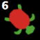
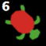

NetLogo GbCC 3.0 Code Snippets
Hello World

NetLogo Code
to gbcc-on-enter [ user-id role ]
show (word "Hello world. User " user-id " entered.")
end
Share Global Variables
NetLogo Code
to share
gbcc:broadcast-plot "my-plot" "populations"
gbcc:store-globals
end
to gbcc-on-select [ user-id role ]
gbcc:restore-globals-from-user user-id
end
Model with Sample Code
Wolf Sheep
Use Direction Buttons to Move Turtle and it's GeoGebra Point

NetLogo Code
to setup
;; note choose one of the following
graph:show-graph [ ] ;; if you want to show the default graph
graph:import-file "geogebra-default.ggb" ;; if you want to a specific ggb file
end
to create-turtle-and-point
create-turtles 1 [
set my-turtle-number who
set patch-coords (list xcor ycor)
set graph-coords graph:patch-to-graph patch-coords
;; point names must only contain letters
graph:create-point "mypoint" graph-coords
]
end
to go-up
go-forward 0
end
to go-down
go-forward 180
end
to go-left
go-forward 270
end
to go-right
go-forward 90
end
to go-forward [ direction ]
ask turtle my-turtle-number [
set heading direction
fd 1
set graph-coords graph:patch-to-graph (list xcor ycor)
graph:set-xy "mypoint" graph-coords
]
end
Model with Sample Code
Triangle
Share Code and Run It

NetLogo Code
to share
gbcc:broadcast-view "my-view"
gbcc:set "code" my-code
end
to gbcc-on-select [ user-id role ]
set code-example gbcc:get-from-user user-id "code"
end
to run-code
run code-example
end
Model with Sample Code
Catch A Planet
Turtles Walk Around at the Same Time

NetLogo Code
to setup
create-turtles 1 [
set my-turtle-number who
gbcc:set "shape" shape
gbcc:set "color" color
gbcc:broadcast-avatar shape color ""
]
end
to go-up
go-forward 0
end
to go-down
go-forward 180
end
to go-left
go-forward 270
end
to go-right
go-forward 90
end
to go-forward [ direction ]
ask turtle my-turtle-number [
set heading direction
fd 1
gbcc:set "xcor" xcor
gbcc:set "ycor" ycor
]
end
to gbcc-on-select [ user-id role ]
if (user-id != gbcc:who-am-i) [
create-turtles 1 [
set id user-id
set shape gbcc:get-from-user user-id "shape"
set color gbcc:get-from-user user-id "color"
set xcor gbcc:get-from-user user-id "xcor"
set ycor gbcc:get-from-user user-id "ycor"
]
]
end
to gbcc-on-deselect [ user-id role ]
if (user-id != gbcc:who-am-i) [
ask turtles with [ id = user-id ] [ die ]
]
end
to gbcc-on-go [ user-id role ]
ask turtles with [ id = user-id ] [
set xcor gbcc:get-from-user user-id "xcor"
set ycor gbcc:get-from-user user-id "ycor"
]
end
Add forces to a bristlebot
NetLogo Code (NOT TESTED)
to setup
physics:create-rectangle "belly" "my-bristlebot"
physics:set-body-xy "my-bristlebot" [ 5 5 ]
physics:set-rectangle-relative-coords "belly" [ 0 0 ] [ 4 4 ]
physics:create-polygon "head" "my-bristlebot"
physics:set-polygon-coords "head" [ [ -1 -1 ] [ 0 0 ] [ 1 1 ] ]
physics:set-behavior "my-bristlebot" "dynamic"
physics:create-target "target-0" "my-bristlebot"
physics:set-target-relative-xy "target" [ 0 0 ]
end
to apply-force
physics:apply-force-relative-angle "target-0" my-angle my-force
end
to shift-target-up
let center physics:get-target-relative-center "target-0"
physics:set-target-relative-center "target-0" (list item 0 center (item 0 center + 1) )
end
to shift-target-down
let center physics:get-target-relative-center "target-0"
physics:set-target-relative-center "target-0" (list item 0 center (item 0 center - 1)
end
to go
every 0.1 [
tick
]
end
Turtles Explore Small Part of Big World

NetLogo Code
to gbcc-on-enter [ user-id role ]
if (user-id = gbcc:who-am-i and role = "student") [
image:zoom 5
create-turtles 1 [
set id user-id
set my-turtle-number who
setxy random-pxcor random-pycor
set size 2
set shape "circle"
gbcc:set "xcor" xcor
gbcc:set "ycor" ycor
gbcc:set "color" color
set pcolor color + 2
gbcc:broadcast-avatar shape color ""
]
follow turtle my-turtle-number
]
if (user-id != gbcc:who-am-i ) [
create-turtles 1 [
set id user-id
set size 2
set shape "circle"
ht
set setup? false
]
]
end
to gbcc-on-select [ user-id role ]
if (user-id != gbcc:who-am-i ) [
ask turtles with [ id = user-id ] [
if (not setup?) [
set setup? true
set color gbcc:get-from-user id "color"
st
]
set xcor gbcc:get-from-user user-id "xcor"
set ycor gbcc:get-from-user user-id "ycor"
set pcolor color + 2
]
]
end
to go-up
go-forward 0
end
to go-down
go-forward 180
end
to go-left
go-forward 270
end
to go-right
go-forward 90
end
to go-forward [ direction ]
ask turtle my-turtle-number [
set heading direction
fd 1
gbcc:set "xcor" xcor
gbcc:set "ycor" ycor
set pcolor color + 2
]
end
to gbcc-on-go [ user-id role ]
if (role = "student") [
ask turtles with [ id = user-id ] [
set xcor gbcc:get-from-user user-id "xcor"
set ycor gbcc:get-from-user user-id "ycor"
set pcolor color + 2
]
]
end
Streaming Worms

NetLogo Code
;;;; STUDENT ACTIONS ;;;;
to go-up
gbcc:add-to-stream "move" "up"
end
;;;; TEACHER LISTENS ;;;;
to setup-listen-to-student [ user-id ]
ask turtles with [ id = user-id ] [
show-turtle
let coords gbcc:get-from-user user-id (word "turtle-data-" id)
setxy item 1 coords item 2 coords
set color gbcc:get-from-user user-id "color"
]
end
to listen-to-student [ user-id ]
let move-messages gbcc:get-stream-from-user user-id "move"
foreach move-messages [ message ->
move-turtle user-id message
]
end
to move-turtle [ user-id message ]
ask turtles with [ id = user-id ] [
ifelse (message = "up")
[ set ycor ycor + 1 ]
[ ifelse (message = "down")
[ set ycor ycor - 1 ]
[ ifelse (message = "left")
[ set xcor xcor - 1 ]
[ set xcor xcor + 1 ]
]
]
gbcc:set (word "turtle-data-" user-id) (list xcor ycor)
let my-color color
let turtle-data (list user-id xcor ycor)
ask turtles [ gbcc:add-to-stream (word id "-turtle-data") turtle-data ]
let patch-data (list xcor ycor color)
let turtle-data-for-patches (list color xcor ycor)
ask patches in-radius 3
[
set pcolor item 0 turtle-data-for-patches + distancexy item 1 turtle-data-for-patches item 2 turtle-data-for-patches
set patch-data (list pxcor pycor pcolor)
gbcc:set (word "patch-data-" pxcor "-" pycor) patch-data
ask turtles [ gbcc:add-to-stream (word id "-patch-data") patch-data ]
]
]
end
;;;; STUDENT LISTENS ;;;;
to setup-listen-to-teacher [ user-id ]
let coords (list )
ask turtles [
set coords gbcc:get-from-user user-id (word "turtle-data-" id)
setxy item 1 coords item 2 coords
]
ask patches [
set pcolor gbcc:get-from-user user-id (word "patch-data-" pxcor "-" pycor)
]
end
to listen-to-teacher [ user-id ]
let turtle-messages gbcc:get-stream-from-user user-id (word my-user-id "-turtle-data")
foreach turtle-messages [ message ->
;; message is of form [ user-id xcor ycor ]
ask turtles with [ id = item 0 message ] [ setxy item 1 message item 2 message ]
]
let patch-messages gbcc:get-stream-from-user user-id (word my-user-id "-patch-data")
foreach patch-messages [ message ->
;; message is of form [ pxcor pycor pcolor ]
ask patch item 0 message item 1 message [ set pcolor item 2 message ]
]
end
Model with Sample Code
Streaming Worms
streamingworms.zip
Update Turtles to match Map
NetLogo Code
to update-turtles
graph:update-graph
ask turtles [
let graph-coords graph:get-xy point-name
let patch-coords graph:graph-to-patch graph-coords
setxy item 0 patch-coords item 1 patch-coords
]
end
Model with Sample Code
Graph Test
Share Lists of Points
NetLogo Code
to share
;; Share points, but make them unique. I prefixed my points with "butterfly".
let points (list)
let new-name ""
let new-point (list)
foreach graph:get-points [ x ->
set new-name (word "butterfly" item 0 x)
set new-point (list new-name item 1 x)
set points lput new-point points
]
gbcc:set "my-points" points
gbcc:broadcast-view ""
end
to gbcc-on-select [ user-id role ]
let points gbcc:get-from-user user-id "my-points"
graph:create-points points
end
to gbcc-on-deselect [ user-id role ]
let points gbcc:get-from-user user-id "my-points"
foreach points [ x ->
graph:delete-object item 0 x
]
end
Most Recent Code 94/25/18
maps-demo.zip
gbcc-moose-2.zip
triangle-jun-28.zip
More info
This has the latest GbCC code, including:
-- MAPS --
maps:show-map
maps:set-opacity 0.5
show maps:get-opacity
maps:bring-to-front
maps:send-to-back
show maps:get-map-offset
maps:set-map-offset [ 10 10 ]
-- GRAPH --
graph:show-graph
graph:set-opacity 0.5
show graph:get-opacity
graph:delete-points
graph:delete-point "point0"
graph:show-object-label "point0"
graph:hide-object-label "point0"
graph;show-toolbar
graph:hide-toolbar
graph:bring-to-front
graph:send-to-back
graph:set-all "some-long-string"
show graph:get-all
show graph:get-graph-offset
graph:set-graph-offset [ 10 10 ]
graph:delete-object
-- PHYSICS --
physics:show-toolbar
physics:hide-toolbar
physics:show-world
-- GBCC --
gbcc:show-patches
gbcc:hide-patches
Still to come
Rethinking paths. Include attributes like path color.


 
